This is a variant of alluvial diagram suitable for multiple (cross-sectional) time series. It also works with continuous variables equivalent to time
Usage
alluvial_ts(
dat,
wave = NA,
ygap = 1,
col = NA,
alpha = NA,
plotdir = "up",
rankup = FALSE,
lab.cex = 1,
lab.col = "black",
xmargin = 0.1,
axis.col = "black",
title = NA,
title.cex = 1,
axis.cex = 1,
grid = FALSE,
grid.col = "grey80",
grid.lwd = 1,
leg.mode = TRUE,
leg.x = 0.1,
leg.y = 0.9,
leg.cex = 1,
leg.col = "black",
leg.lty = NA,
leg.lwd = NA,
leg.max = NA,
xlab = NA,
ylab = NA,
xlab.pos = 2,
ylab.pos = 1,
lwd = 1,
...
)Arguments
- dat
data.frame of time-series (or suitable equivalent continuously disaggregated data), with 3 columns (in order: category, time-variable, value) with <= 1 row for each category-time combination
- wave
numeric, curve wavyness defined in terms of x axis data range - i.e. bezier point offset. Experiment to get this right
- ygap
numeric, vertical distance between polygons - a multiple of 10% of the mean data value
- col
colour, value or vector of length matching the number of unique categories. Individual colours of vector are mapped to categories in alpha-numeric order
- alpha
numeric, [0,1] polygon fill transparency
- plotdir
character, string ('up', 'down' or 'centred') giving the vertical alignment of polygon stacks
- rankup
logical, rank polygons on time axes upward by magnitude (largest to smallest) or not
- lab.cex
numeric, category label font size
- lab.col
colour, of category label
- xmargin
numeric [0,1], proportional space for category labels
- axis.col
colour, of axes
- title
character, plot title
- title.cex
numeric, plot title font size
- axis.cex
numeric, font size of x-axis break labels
- grid
logical, plot vertical axes
- grid.col
colour, of grid axes
- grid.lwd
numeric, line width of grid axes
- leg.mode
logical, draw y-axis scale legend inside largest data point (TRUE default) or alternatively with custom position/value (FALSE)
- leg.x, leg.y
numeric [0,1], x/y positions of legend if leg.mode = FALSE
- leg.cex
numeric, legend text size
- leg.col
colour, of legend lines and text
- leg.lty
numeric, code for legend line type
- leg.lwd
numeric, legend line width
- leg.max
numeric, legend scale line width
- xlab, ylab
character, x-axis / y-axis titles
- xlab.pos, ylab.pos
numeric, perpendicular offset for axis titles
- lwd
numeric, value or vector of length matching the number of unique categories for polygon stroke line width. Individual values of vector are mapped to categories in alpha-numeric order
- ...
arguments to pass to polygon()
Examples
if( require(reshape2) )
{
data(Refugees)
reshape2::dcast(Refugees, country ~ year, value.var = 'refugees')
d <- Refugees
set.seed(39) # for nice colours
cols <- hsv(h = sample(1:10/10), s = sample(3:12)/15, v = sample(3:12)/15)
alluvial_ts(d)
alluvial_ts(d, wave = .2, ygap = 5, lwd = 3)
alluvial_ts(d, wave = .3, ygap = 5, col = cols)
alluvial_ts(d, wave = .3, ygap = 5, col = cols, rankup = TRUE)
alluvial_ts(d, wave = .3, ygap = 5, col = cols, plotdir = 'down')
alluvial_ts(d, wave = .3, ygap = 5, col = cols, plotdir = 'centred', grid=TRUE,
grid.lwd = 5)
alluvial_ts(d, wave = 0, ygap = 0, col = cols, alpha = .9, border = 'white',
grid = TRUE, grid.lwd = 5)
alluvial_ts(d, wave = .3, ygap = 5, col = cols, xmargin = 0.4)
alluvial_ts(d, wave = .3, ygap = 5, col = cols, xmargin = 0.3, lab.cex = .7)
alluvial_ts(d, wave = .3, ygap = 5, col = cols, xmargin = 0.3, lab.cex=.7,
leg.cex=.7, leg.col = 'white')
alluvial_ts(d, wave = .3, ygap = 5, col = cols, leg.mode = FALSE, leg.x = .1,
leg.y = .7, leg.max = 3e6)
alluvial_ts(d, wave = .3, ygap = 5, col = cols, plotdir = 'centred', alpha=.9,
grid = TRUE, grid.lwd = 5, xmargin = 0.2, lab.cex = .7, xlab = '',
ylab = '', border = NA, axis.cex = .8, leg.cex = .7,
leg.col='white',
title = "UNHCR-recognised refugees\nTop 10 countries (2003-13)\n")
# non time-series example - Virginia deaths dataset
d <- reshape2::melt(data.frame(age=row.names(VADeaths), VADeaths), id.vars='age')[,c(2,1,3)]
names(d) = c('pop_group','age_group','deaths')
alluvial_ts(d)
}
#> Loading required package: reshape2
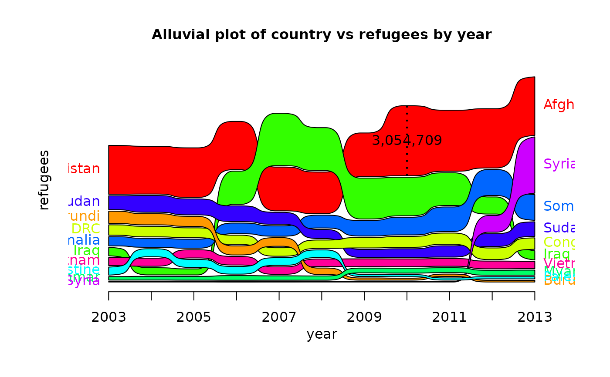
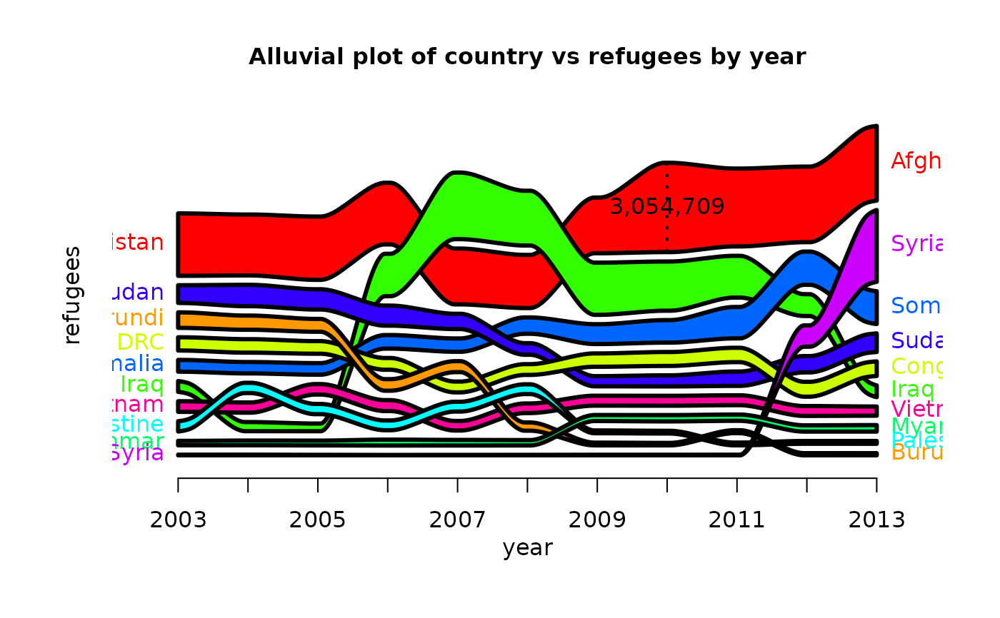
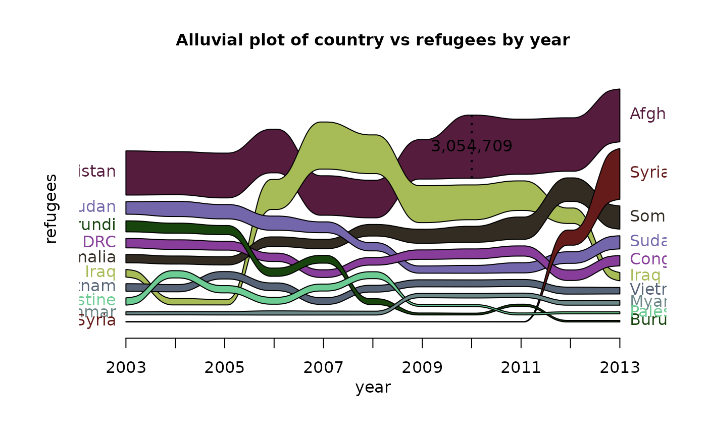
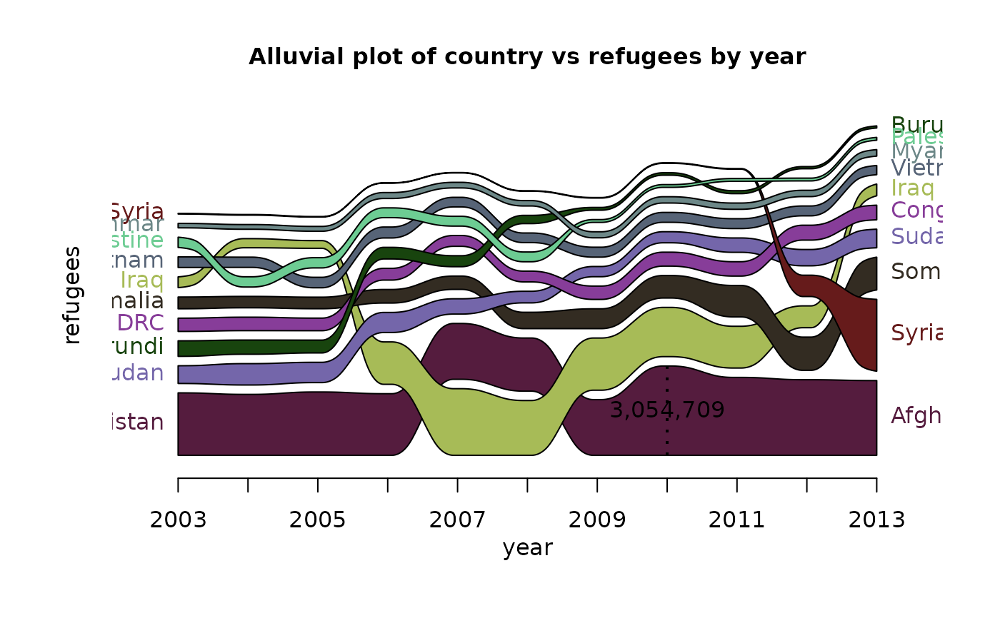
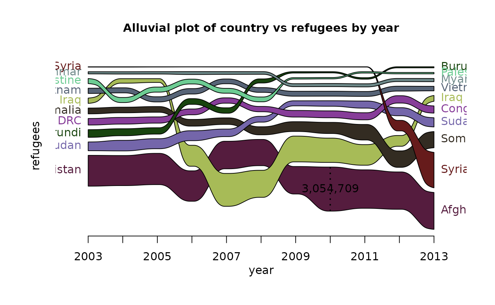
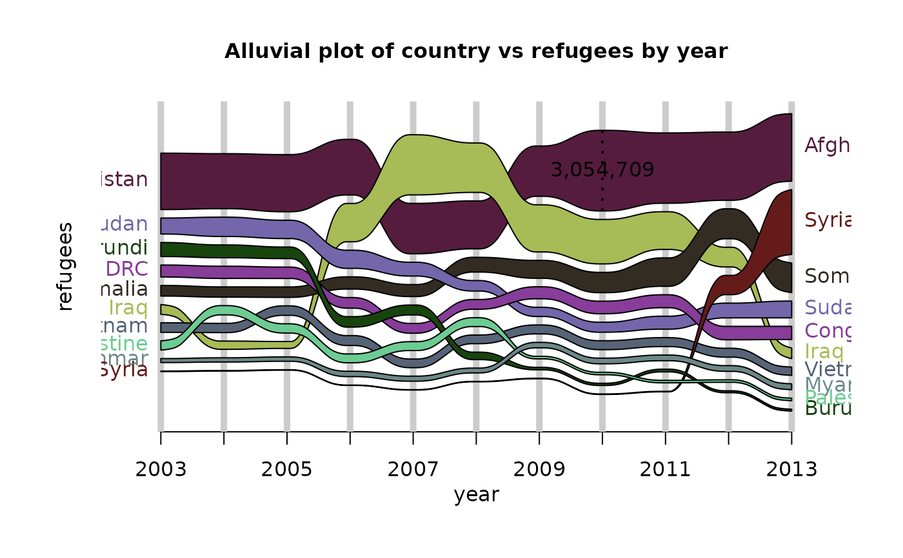
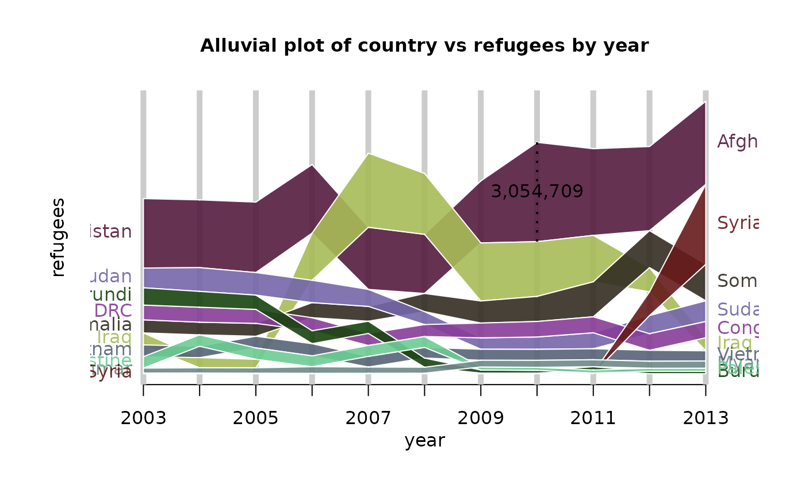
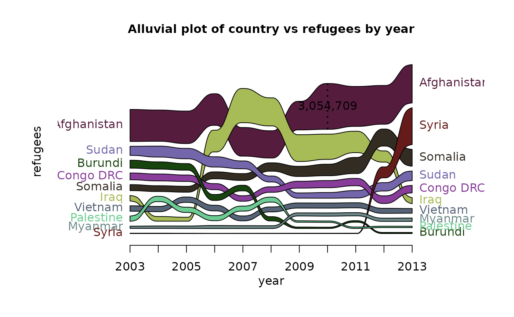
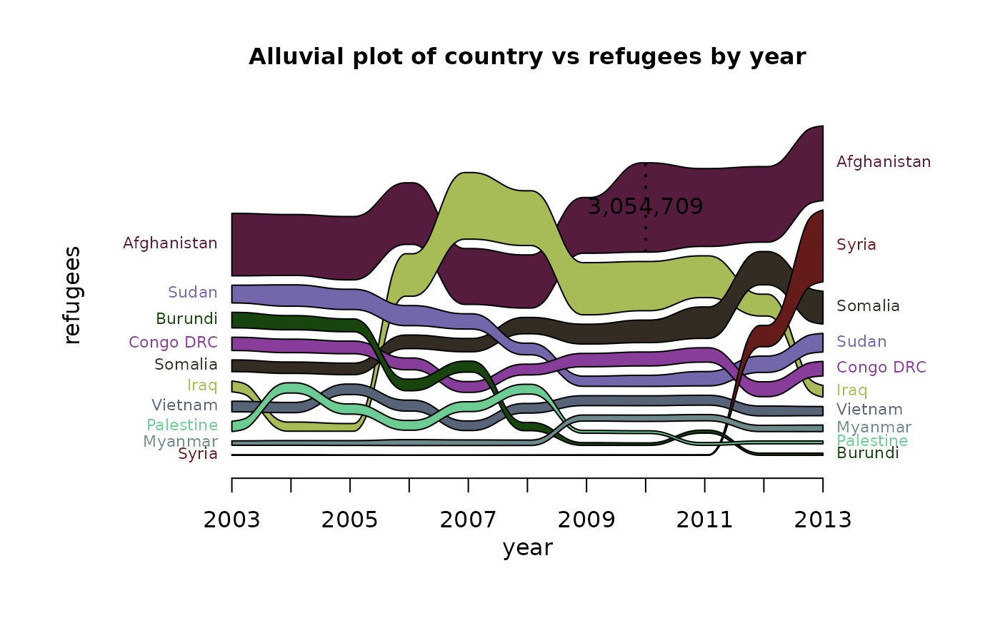
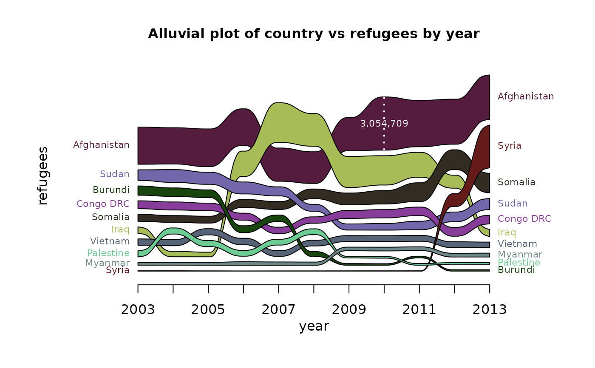
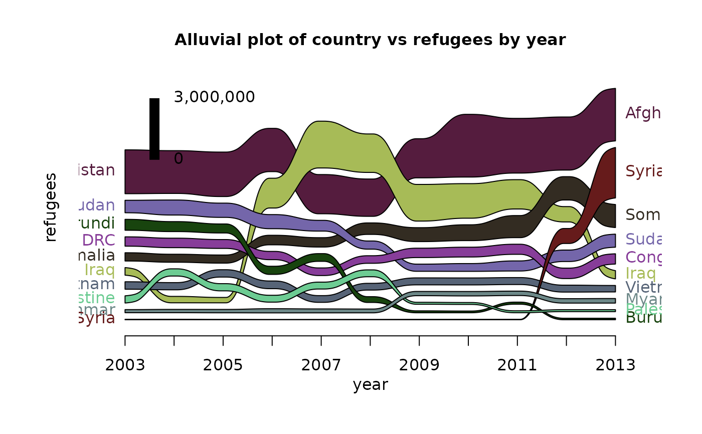
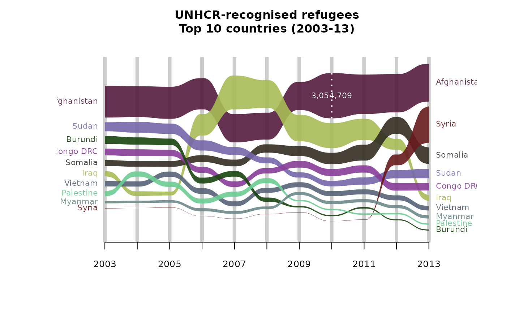
#> [1] "Error: time variable must be numeric, factor, or ordered"